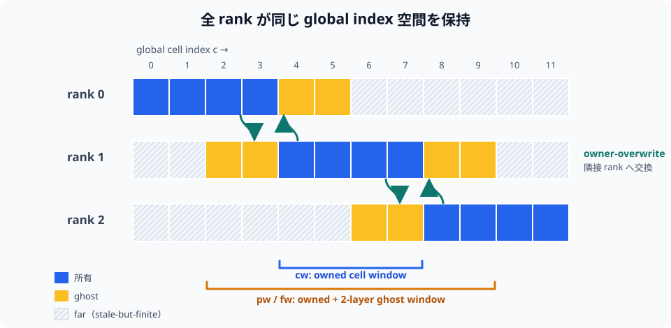

MPI 分割 reference
TENRYU の MPI 実装は 1 ランク = 1 GPU を基本とし、各ランクが全体サイズの配列を保持したまま、自分の所有ウィンドウだけを更新する「方式 C」（分割設計の選定時にこの配置へ与えられた名前。局所添字へ圧縮する代替案は棄却された）を採用している。分割の境界はゴースト（袖）領域の交換で結び、カーネルが作用する範囲を明示することで、単一ランクの実行を「全範囲がウィンドウ」という同じ実装の特殊ケースにしている。
設計原理
前提となる制約は、1 MPI ランク = 1 GPU、決定論的な物理カーネル、そして明示的な添字範囲の上に記述されたカーネル、の 3 つである。方式 C では、すべてのランクが全体サイズの配列を保持しつつ、各ランクはひとつのウィンドウだけを所有する。メモリと引き換えに、単純さと安全性を得る設計である。局所添字への読み替えの誤りが生じず、単一ランクでの実行は全範囲をウィンドウとする同一のコードそのものであり、演算子の MPI 対応は、カーネルが作用できる範囲を狭めることで実現できる。
それでも、ステンシルを使う物理には隣接する状態が必要である。2 層のゴーストが、監査済みのすべてのステンシルを覆う。1D の市松模様の PQ フィルタ（全セル圧 \(P+Q\) に掛ける奇偶フィルタ）は \(\rho\) と有効な状態量の \(i\pm2\) を読み、電子系の奇偶流束（1D の電子エネルギーに適用する市松ノイズ抑制の保存的フェイスフィルタ。フェイスの流束を立てるかの判定が、両隣に加えてもう一つ先のセルの \(e_e\) を参照する）は、セル添字を \(j\) として \(j-2\) から \(j+1\) まで届く。共有される面には所有側で上書きする規約を用いるため、どの値が権威をもつかが曖昧にならない。ゴーストは所有側の値の複製であり、所有側の値と併合されることはない。
再現性と対応範囲も明示している。所有部分は通常 MPI_Allreduce(SUM) で結合するため、異なるランク数のあいだでのビット単位の一致は約束しない。ランク数を固定すれば、決定論的なカーネルは決定性を保つ。MPI について監査が済んでいない機能は誤って実行されることがなく、設定検証の段階できれいに失敗する。遠方のセルは設計上「古いが有限」であってよい一方、物理側がそれを読んではならず、各起動ウィンドウが検査可能な正しさの契約になる。
cw、nw、pw、fw: 配列の複製ではなく、カーネルを起動する範囲の役割を表す — ソースコードにだけ現れる短縮名で、namelist にも出力ファイルにも現れない。下の表が、所有セル、所有節点、所有+ゴーストの用途を定義する。- 2 層のゴースト: \(i\pm2\) を参照する市松模様の PQ フィルタと、\(j-2\ldots j+1\) に届く電子系の奇偶流束が幅を決めており、監査済みの 1 層ステンシルもその内側に収まる。
- 共有される i 面: 隣り合うランクが同じ節点を計算する場合でも、所有側での上書きによって、権威をもつビットパターンがひとつに定まる。
- 2D の配置: 平坦化した添字 \(c=i\,n_z+j\) では、r 方向のスラブが大域配列の連続した領域になる。
所有ウィンドウによる分割
1D_SPH は、大域のセル列を連続する動径方向のスラブへ静的に分割する。2D_RZ の v1 実装は r 方向のスラブを使い、平坦化したセル添字 \(c=i\,n_z+j\) の上で各スラブが連続区間になるようにする。局所的に詰めた配列への添字変換は行わない。すべてのランクが全体サイズの配列を確保するため、所有していない領域も同じ添字で参照できるが、物理状態を更新する権限は所有するランクだけがもつ。
実装中に現れる短いウィンドウ名は、別々の配列を意味するのではなく、カーネルを起動する添字範囲の役割を表す。
| ウィンドウ | 範囲と用途 |
|---|---|
cw | State::owned_cell_window(n)。所有セルの更新、診断量の部分和、内積・最小・最大の局所項に使う。 |
nw | State::owned_node_window(n)。所有節点の位置と速度の更新に使う。共有される i 面では両側で同じ式を評価し、交換時に所有側で上書きすることで権威をもつ値を確定する。 |
pw | 呼び出し箇所で用いる、所有+ゴーストのセルウィンドウの別名である。近傍ステンシルの生成側や中間量を、所有領域の外側まで計算する段で使う。 |
fw | State::owned_cell_window_ghost(n, stride) による所有+ゴーストの範囲である。界面上の節点に両側のセルからの寄与が必要な力の散布や、ゴースト領域の派生量に使う。 |

ゴースト（袖）領域の交換
v1 の正規の幅は n_ghost=2 である。1D の市松模様の PQ フィルタと電子系の奇偶流束が \(i\pm2\) を参照し、Kershaw の 9 点伝導ステンシル（電子・イオン熱伝導参照）、流体のコーナー力散布（ラグランジュ流体参照）、Winslow リゾーン反復（ALE 参照）が必要とする 1 層も、この幅に含まれる。ゴーストは別の局所添字の領域ではなく、所有スラブに隣接する大域の添字位置である。交換後は所有側の値とビット単位で一致する。
所有領域とゴーストの外側にある遠方の領域は 古いが有限 であればよく、古い値を保持していても構わない。ただし有限でなければならず、所有領域の計算結果、収束の判定、再試行の判定、診断量へ影響してはいけない。このため、部分的な縮約も必ず所有ウィンドウに限定する。
交換は「所有ウィンドウを書いた直後、最初にゴーストを読む処理より前」という位置に段階的に置く。流体の入口では、エネルギー、質量、圧力、温度、密度、平均電離度といったセルの場を交換し、予測子・修正子で位置を確定した直後には節点の位置と速度を交換する。2D のステンシルが必要とする斜め隣接の値は、面方向とコーナー方向の交換で満たす。GPU 対応の MPI では、デバイス上で詰め込み、MPI_Isend/MPI_Irecv、MPI_Waitall、デバイス上での取り出しの順に進む。GPU 対応の転送が使えない環境では、ホストを経由した中継を挟む。
ウィンドウ化したカーネル
更新カーネルは概念的に (begin, end) を受け取り、スレッド局所のオフセットではなく absolute_index = begin + tid を使う。したがって大域的な軸や外側境界の判定は従来どおりで、内部のランクが誤って物理境界用の分岐に入ることはない。セルの更新は cw、節点の更新は nw を使い、ステンシルによる派生量や界面への散布では、必要な場合にかぎり pw/fw へ広げる。
2D 流体のコーナー力は fw の上で所有セルとゴーストセルの寄与を積み上げるため、共有する節点に必要な両側からの力が各ランクで局所的にそろい、コーナー力のための MPI 交換を追加する必要がない。FLD-2D の分散共役勾配法は、所有行の疎行列ベクトル積と所有ウィンドウ上の内積を使い、探索方向を反復ごとにゴースト交換する。単一ランクでは cw、nw、pw、fw がすべて [0,n) に退化し、全範囲での起動がそのまま逐次実行の特殊ケースになる。
縮約と再現性
全体のエネルギー、時間刻み、ソルバの内積などは、各ランクが所有ウィンドウで部分値を作り、標準の MPI_Allreduce でまとめる。一般の MPI_Allreduce(SUM) は、ランク数をまたいだ浮動小数点のビット単位の一致を保証しない。加算の結合順序は MPI の実装とランク構成に依存するため、ランク数を変えると最下位ビットが動く場合がある。再現性の契約（リポジトリの docs/NUMERICS.md §12）では、これらの縮約をランク数をまたいでビット単位ではなく統計的に再現可能なものとして分類しており、従来の gather してルートで逐次加算する方式は標準の経路から廃止されている。
一方、ビット単位の一致が必要な限られた量には、ソースに明記された正規の経路を使う。たとえばレーザーの保存則に基づく再スケール係数は、集めた配列をランク 0 が正規の順序で合計し、厳密に 0 を加える Allreduce で全ランクへ配布する。GPU カーネル内の協調グリッド（cooperative groups）による 2 段固定の縮約も、カーネルの起動構成（ブロック数）が同じであれば決定論的だが、グリッドサイズを変えれば加算の順序も変わるため、許容誤差の範疇の変更になる。したがって「MPI 実行はすべてビット単位で一致する」という包括的な主張はしない。
MPI v1 の適用範囲と先送りの保護
監査が済んでいない演算子を、ウィンドウ化した状態に対して暗黙のうちに実行すると、遠方領域の参照や集団通信の回数の不一致を見逃してしまう。MPI v1 では、未対応の機能と n_ranks>1 の組合せを明示的に失敗させ、namelist の検証またはドライバがきれいなエラーを返す。ソース上で先送りとされている例には、SNB、CBET、ホット電子、Braginskii 粘性、材料別の保存が含まれる。
midpoint_v1 も、コードで強制した先送りの例である。現在のドライバは、ランク数が 2 以上で Numerics.hydro.time_integration="midpoint_v1"（2D の既定値）を検出すると、中点法の内部がランク分割されていないことを示す明示的なエラーで拒否する。したがって複数ランクの 2D デッキでは time_integration="pc_v0" を明示する必要がある。対応していない経路へ黙って退避するのではなく、実行前に構成を止めることが、この保護の契約である。
MPI による 1 ステップ
所有領域の処理を起動する。 各演算子は
cwまたはnwを通じて、所有するセル・節点の範囲だけを更新し、所有する要素だけから部分的な縮約を作る。ステンシルの生成側を広げる。 隣接するランクから参照される中間状態を作る必要がある処理は、意図的に
pwまたはfwへ範囲を広げる。遠方の要素は契約の対象外のままである。袖領域を更新する。 所有ランクが書き込んだあと、最初にゴーストを読む処理より前に、場をデバイス上で詰め込み、非ブロッキングの送受信、待ち合わせ、2 層のゴーストへの取り出し、という順で交換する。2D では、面の交換を終えたあとに、コーナーと、物理境界と並列境界が混ざるコーナーの値を埋める。GPU 対応の MPI が使えない場合にかぎり、ホストを経由した中継を挟む。
全体量をまとめる。 所有部分のエネルギー、時間刻みの制限、ソルバの内積を、適切な
MPI_Allreduceでまとめる。加算する量には通常SUMを使う。LaserMesh を同期する。 1D では、所有する半径方向の分布を光線追跡の前に
MPI_Allgathervで組み立て、結果は自ランクの HydroMesh のセルにだけ適用する。2D では、所有する HydroMesh からの寄与を射影し、MPI_Allreduce(SUM)で全ランクに複製された LaserMesh を構成する。各ランクが同じ場を追跡し、沈着は自分の所有セルにだけ散布する。対応範囲を関門で確認する。 複数ランク向けにカーネル、交換、集団通信の順序が監査されていない機能は、設定検証またはドライバが拒否する。
ビルドと実行のメモ
| 項目 | 指定 | 意味 |
|---|---|---|
| MPI ビルド | cmake -S . -B build -DTENRYU_ENABLE_MPI=ON | 正規の CMake のフラグで MPI 対応を有効にする。 |
| 起動 | mpirun -n N ./build/tenryu run <deck.py> | N 個のランクを起動する。基本の配置は 1 ランク = 1 GPU である。 |
| 先送りの保護 | 未対応の機能 + n_ranks>1 | 初期化またはドライバが明示的に停止する。黙って別経路へ退避したり、監査のないまま実行を続けたりはしない。 |
検証
- ランク数の比較では P=1 を参照とし、デッキごとに T-bit、T-sum、T-noise のいずれかを割り当てる。T-bit はビット単位、T-sum は
Allreduce(SUM)に由来する差を原則として場の最大値で規格化した \(10^{-8}\) で、T-noise は 2D のコーナー力のatomicAddについて自己較正した帯で判定する。 parallel_halo_exchange_np2とparallel_halo_exchange_np4は、セルと節点における所有側での上書きと、コーナーのゴーストを検査し、解析値および共有節点との機械精度での厳密な一致を要求する。ctest --test-dir build -L mpi_gate --output-on-failureは、1D の FLD/SN、GXII、1D/2D の燃焼、2D の SN/FLD、LaserMesh を含む、現在 10 ケースの MPI 試験群を実行する。各ケースは、ビット単位・帯・包絡（envelope：文書化された非決定性をもつ指標に使う、参照実行アンサンブルから較正したデッキごとの最悪値の帯 — 検証ページの再現性凡例参照）のいずれか指定された段階で、P>1 での所有領域の出力を P=1 と比較する。